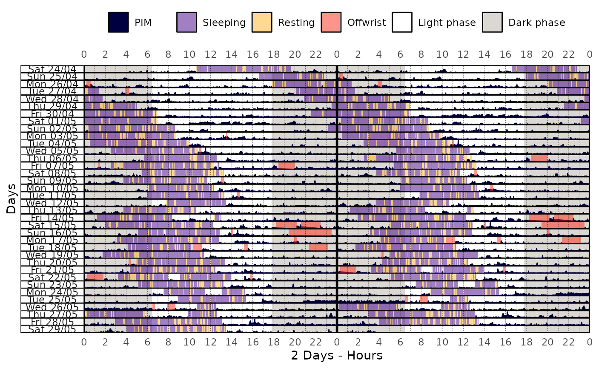
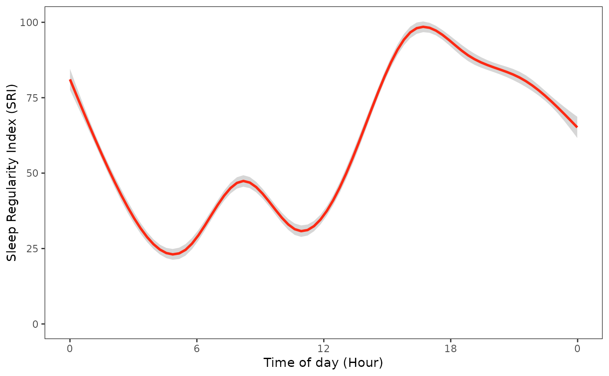

sri() computes the Sleep Regularity Index (SRI) as described by Phillips et
al. (2017) from a
tsibble object, quantifying the consistency of
sleep/wake patterns across days.
Usage
sri(
data,
state_col = "state",
sleeping_states = c(1, 2),
awake_states = 0,
min_data = 0.75
)Arguments
- data
A
tsibbleobject.- state_col
(optional) A string indicating which column of
datahave the states/categories data (default:"state").- sleeping_states
(optional) An
integerishvector indicating which state values are considered as sleeping states (default:c(1, 2)).- awake_states
(optional) An
integerishvector indicating which states values are considered as awake states (default:0).- min_data
(optional) A number indicating the minimum proportion of non-missing values in the agreements required to compute the SRI for each time point. The SRI will only be computed if the proportion of non-missing values is greater than or equal to this threshold. This is useful to avoid computing the SRI when there is insufficient data. Values below this threshold will result in an SRI of
NA. Note that the first agreement value is alwaysNAbecause there is no previous day for comparison, hence it is not treated as missing data. (default:0.75).
Value
A tsibble object with the following columns:
time: Anhmsobject representing the time of day.state: Alistwith afactorof the sleep state at each time point ("Sleeping" or "Awake").previous_state: Alistwith afactorof the sleep state at the same time on the previous day.agreement: Alistwith alogicalvector indicating whether the state matches the previous day's state.sri: Anumericvector representing the Sleep Regularity Index (SRI). See the Details section to learn more about how the SRI is computed.valid_data: Anumericvector representing the proportion of non-missing values in theagreementcolumn, i.e., the amount of information available to compute the SRI for each time point.
Details
The Sleep Regularity Index (SRI) is a measure of sleep regularity, which quantifies the consistency of sleep patterns over time. It is calculated by comparing the state of sleep at a given time of day with the state of sleep at the same time on the previous day.
The index is computed as follows:
For each time point, compare the sleep state (Sleeping/Awake) with the state at the same time on the previous day.
Calculate the proportion of time points where the states match (i.e., agreement).
Scale this proportion to a range from -100 to 100: a score of 100 indicates perfectly regular sleep/wake patterns, while a score of 0 indicates completely random patterns.
Note 1: While SRI values below 0 are theoretically possible (e.g., in cases of highly irregular patterns such as alternating 24-hour periods of sleep and wake), such occurrences are extremely rare in practice.
Note 2: The first agreement value is always NA because there is no
previous day for comparison. This NA is not treated as missing data
because it simply reflects the absence of a reference point, and it is
excluded from the calculation of valid data.
See Phillips et al. (2017) to learn more about the SRI and its applications in sleep research.
References
Phillips, A. J. K., Clerx, W. M., O’Brien, C. S., Sano, A., Barger, L. K., Picard, R. W., Lockley, S. W., Klerman, E. B., & Czeisler, C. A. (2017). Irregular sleep/wake patterns are associated with poorer academic performance and delayed circadian and sleep/wake timing. Scientific Reports, 7(1), 3216. doi:10.1038/s41598-017-03171-4
See also
Other sleep statistics functions:
state_prop()
Examples
library(curl)
library(dplyr)
#>
#> Attaching package: ‘dplyr’
#> The following objects are masked from ‘package:stats’:
#>
#> filter, lag
#> The following objects are masked from ‘package:base’:
#>
#> intersect, setdiff, setequal, union
library(ggplot2)
library(scales)
if (has_internet()) {
file <- get_from_zenodo(
doi = "10.5281/zenodo.4898822",
dir = tempdir(),
file = "processed.txt"
)
data <- read_acttrust(file, tz = "America/Sao_Paulo")
sri_data <- data |> sri()
sri_data |> print()
sri_data |> pull(sri) |> summary() |> print()
data |>
actogram(
col = "pim",
days = -1,
latitude = -23.55065,
longitude = -46.63338,
double_plot = TRUE
)
sri_data |>
ggplot(ggplot2::aes(x = time, y = sri)) +
geom_smooth(color = "#FC2913") +
labs(
x = "Time of day (Hour)",
y = "Sleep Regularity Index (SRI)"
) +
scale_x_time(
breaks = breaks_width("6 hours"),
labels = label_time("%-H") # Use "%#H" for Windows
) +
scale_y_continuous(limits = c(0, NA)) +
actverse:::get_actverse_theme()
}
#> ℹ Reading data
#> ✔ Reading data [235ms]
#>
#> ℹ Tidying data
#> ✔ Tidying data [399ms]
#>
#> ℹ Validating data
#> ℹ Found 2 gap in the time series: 2021-04-26 03:14:00/2021-04-26 03:14:00 and 2021-05-01 17:34:00/2021-05-01 17:34:00 (showing up to a total of 5 values).
#> ℹ Validating data
#> ℹ Found 21 offwrist blocks in the time series. All values were set as NA.
#> ℹ Validating data
#> ✔ Validating data [17.9s]
#>
#> # A tsibble: 1,440 x 6 [1m]
#> time state previous_state agreement sri valid_data
#> <time> <list> <list> <list> <dbl> <dbl>
#> 1 00'00" <fct [36]> <fct [36]> <lgl [36]> 77.1 1
#> 2 01'00" <fct [36]> <fct [36]> <lgl [36]> 77.1 1
#> 3 02'00" <fct [36]> <fct [36]> <lgl [36]> 77.1 1
#> 4 03'00" <fct [36]> <fct [36]> <lgl [36]> 77.1 1
#> 5 04'00" <fct [36]> <fct [36]> <lgl [36]> 77.1 1
#> 6 05'00" <fct [36]> <fct [36]> <lgl [36]> 77.1 1
#> 7 06'00" <fct [36]> <fct [36]> <lgl [36]> 77.1 1
#> 8 07'00" <fct [36]> <fct [36]> <lgl [36]> 77.1 1
#> 9 08'00" <fct [36]> <fct [36]> <lgl [36]> 77.1 1
#> 10 09'00" <fct [36]> <fct [36]> <lgl [36]> 77.1 1
#> # ℹ 1,430 more rows
#> Min. 1st Qu. Median Mean 3rd Qu. Max.
#> -2.857 60.000 71.429 68.076 86.667 94.286

#> `geom_smooth()` using method = 'gam' and formula = 'y ~ s(x, bs = "cs")'
#> Warning: Removed 6 rows containing non-finite outside the scale range (`stat_smooth()`).
